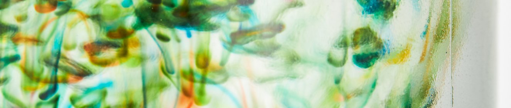

Dr. Jennifer Leigh
Honorary Professor of Chemistry, University of Liverpool
Reader in Creative Practices for Social Justice, University of Kent
PhD, MA, BSc (Hons), MRSC, PGCHE, PGCE, SFHEA
She/Her

- Co-Lead NADSN STEMM Action Group
- Vice-Chair (Research) WISC (Women in Supramolecular Chemistry)
- Co-Chair Staff Disability Network
- Co-Lead Future Human Research Centre
- Co-Chair Visual & Sensory Research Cluster
- Athena Forum Disability Champion
- Lead & founder member of the Summer Vacation Research Competition
- Board member Women in Academia Support Network (#WiASN) Research Working Group
- Empowering Female Minds in STEMM (EFeMS) Advisory and Strategy Boards Member
- Founder of the Supralab Channel
A few of the roles above don't have a confirmed public link yet — they're underlined with a dashed line so you can spot them and drop the right URL in when you have it.